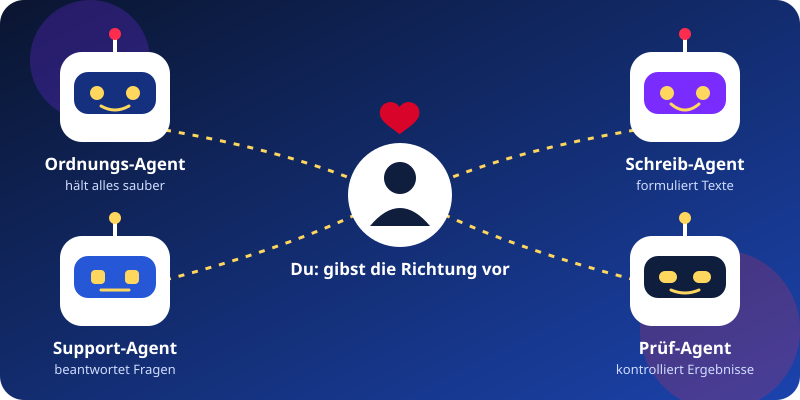

Prompt
Deine Anweisung an die KI. Je klarer Ziel und Rahmen, desto besser das Ergebnis.
„Schreibe eine freundliche Zahlungserinnerung, 3 Sätze.“
Teil 2 des Infoabends
Im zweiten Teil des Abends wird es praktisch: Du verstehst die Begriffe, die alle benutzen, siehst, wie KI-Agenten entstehen, wie man Software wie ein Projektverwaltungs-Tool bauen lässt und wie du sie mit Ninox Custom Apps online stellst. Ohne Vorwissen.
Die Unterlagen gibt es nur für Teilnehmer. Das Passwort erhältst du am Abend.
NochTage
Das Vokabular
Diese fünf Wörter hörst du überall. Nach dem Abend weißt du, was dahintersteckt und wie du sie für dich nutzt.
Deine Anweisung an die KI. Je klarer Ziel und Rahmen, desto besser das Ergebnis.
„Schreibe eine freundliche Zahlungserinnerung, 3 Sätze.“
Eine gespeicherte Arbeitsanleitung für Aufgaben, die du immer wieder brauchst.
„So schreibe ich meine Angebote.“
Ein einheitlicher Anschluss, über den die KI auf deine Werkzeuge und Daten zugreifen kann.
Die KI liest Aufgaben aus deinem Projekt-Tool.
Ein KI-Helfer mit eigener Rolle und eigenen Regeln, der eine Aufgabe selbstständig erledigt.
Ein Agent, der Dateinamen prüft und aufräumt.
Eine Wiederholung: Die KI erledigt etwas regelmäßig oder bis ein Ziel erreicht ist.
„Prüfe jeden Morgen, was heute fällig ist.“
Dein KI-Team
Ein Agent ist keine Zauberei. Er besteht aus einer Rolle, ein paar klaren Regeln und einer Aufgabe. Am Abend siehst du live, wie das entsteht.

Je klarer du bist, desto besser arbeitet dein Agent. Auch hier beginnt alles bei dir.
Ohne Programmierkenntnisse
Du beschreibst, was du brauchst. Die KI schlägt ein Datenmodell vor und baut mit dir Schritt für Schritt eine Anwendung. Als Beispiel entsteht am Abend ein Projektverwaltungs-Tool.
Projekte, Aufgaben, Termine, Verantwortliche. Die KI stellt dir Rückfragen.
Tabellen und Felder, zum Beispiel Projekt, Aufgabe, Status.
Die Anwendung entsteht, du probierst sie mit Beispieldaten aus.
Du sagst, was fehlt. Die KI passt an, bis es für dich passt.
Der erste Eindruck zählt
Mit KI baust du eine Webseite, die professionell aussieht, schnell lädt und für alle nutzbar ist. Du klärst zuerst Ziel und Zielgruppe, den Rest erledigt die KI mit dir gemeinsam.
Was soll der Besucher tun? Die KI fragt nach, bevor sie etwas baut.
Texte, Bilder, Seitenaufbau und ein klarer Anmelde- oder Kontaktknopf.
Ein einheitliches Design, das auf Handy und Rechner gut aussieht.
Alle Links, das Handy, Tempo und Bedienung mit der Tastatur werden geprüft.
Hinweis: Rechtliche Fragen zu Impressum und Datenschutz klärst du mit einer Rechtsberatung.
Vom Prototyp zur Anwendung
Zum Abschluss wird das ganze Projekt noch online gestellt, hier zum Beispiel mit ninox.com (neues Fenster). Eine Custom App ist eine eigenständige Web-App, die ihre Daten aus einem Ninox-Modul liest und schreibt.
Nur für Teilnehmer
Eine Datei für dein Handy oder deinen Rechner, die auch ohne Internet funktioniert. Das Passwort bekommst du am Abend der Veranstaltung von mir.
Noch kein Passwort? Melde dich jetzt an und sei am 27.11.2026 dabei.
Freitag, 27.11.2026, 20.00 Uhr im Wirtshaus zum Reiterhof in Heilbronn-Horkheim. Teil 1: Herzintelligenz. Teil 2: KI-Agenten und eigene Software. Danach Business Netzwerk-Treffen mit Austausch. Die Plätze werden langsam knapp.
Jetzt Platz sichernLade Freunde, Familie und Kollegen herzlich ein. Der Abend ist für alle, die neugierig auf neue Techniken und die eigene Entwicklung sind. Mit einem Klick verschickst du die Einladung, zum Beispiel per E-Mail oder WhatsApp.
Es werden auch Schulungen für Unternehmen angeboten. So werden Ihre Mitarbeiter fit in neuen Techniken und KI.
Fr, 27.11.2026, 20.00 UhrPlätze werden knapp
Jetzt anmelden